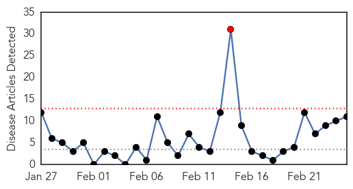
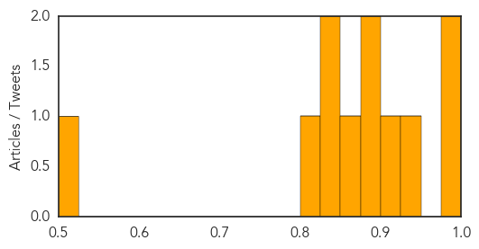

Meningitis
30-Day Web Trend
16 alerts, 3 warnings

30-Day Twitter Trend
0 alerts, 0 warnings

Article Locations

Article Confidences

Top Articles:
- 0.988
- 20 kids affected with polio-like illness cases
- 0.986
- Polio-Like Illness Found in Five California Children – New Day
- 0.982
- 'About 20' cases of polio-like illness found in California
- 0.956
- Probable meningococcal meningitis kills three in Nice, France
- 0.929
- Incidence of typhoid on the rise in twin cities
- 0.914
- Novartis' MenB vaccine, Bexsero to use for vaccination programme at University of California
- 0.712
- UCSB Begins Mass Meningitis B Vaccinations for Students, Staff
- 0.662
- ‘Parents of newborns should know all the symptoms of meningitis’
- 0.503
- Madisonville Student Diagnosed With Meningitis
Top Tweets:
-
No tweets found for Feb 25, 2014
Measles
30-Day Web Trend
1 alerts, 0 warnings

30-Day Twitter Trend
0 alerts, 0 warnings

Article Locations
Article Confidences
Top Articles:
- 0.993
- Two cases of measles confirmed in Massachusetts
- 0.987
- Why Some Wealthy, Educated Parents Avoid Vaccines
- 0.939
- First Measles Case of 2014 reported in San Mateo County
- 0.908
- Health officials identify second measles exposure location
- 0.893
- Second case of measles, outbreak confirmed in Hawaii
- 0.885
- Measles cases confirmed in Boston-area suburb
- 0.867
- Doctors blame vaccination neglect as measles makes a comeback
- 0.843
- State investigates second possible measles case
- 0.840
- Measles affects 20 students at Westlake Boys
- 0.803
- WA measles spike blamed on Philippines
- 0.502
- Government health agency is not up to job, say MPs
Top Tweets:
-
No tweets found for Feb 25, 2014